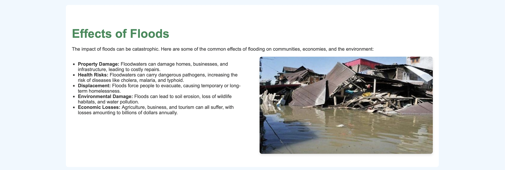
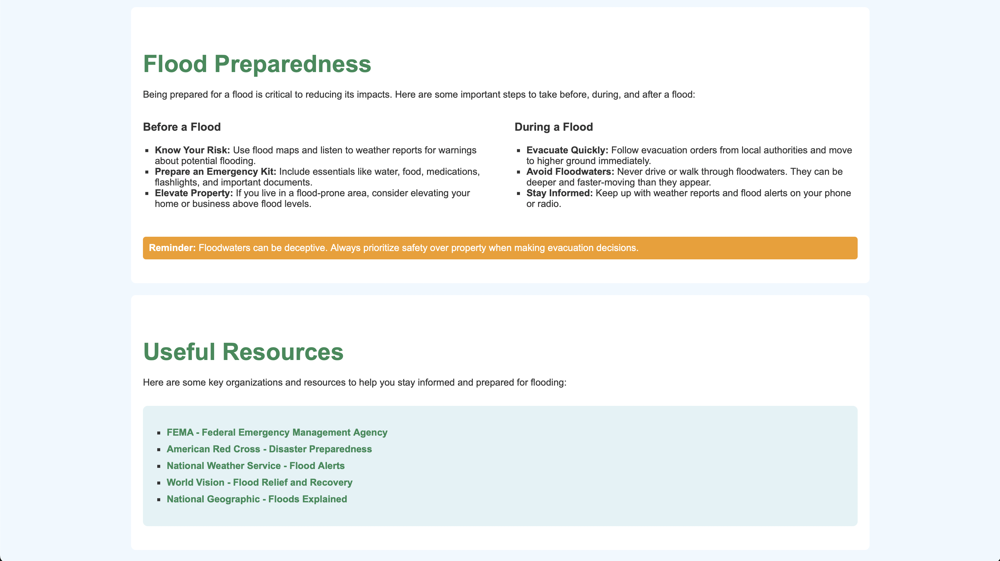

Floods in India
Open source platform built with HTML,CSS. The dashboard provides a easy way of learning the history of Floods in India.
 Sheikh Arsalan Visit Project
Sheikh Arsalan Visit Project
About the Project
Designing a website to explore the history of floods in India requires a user-friendly interface and engaging visuals to effectively convey information. The homepage can feature a striking visual of a flood-affected region paired with a compelling tagline like Tracking the History of Floods in India: Lessons for a Resilient Future. Key sections could include an interactive timeline highlighting major flood events such as the 2005 Mumbai floods or the 2018 Kerala floods, with detailed pop-ups for each event covering dates, impacts, and government responses. Another section can delve into the causes and effects of floods, explaining factors like heavy monsoons, unplanned urbanization, and dam failures, supported by maps and infographics showcasing flood-prone areas and damage statistics.
In-depth case studies on notable floods, such as those in Uttarakhand or Assam, can provide insights into their impacts and lessons learned. Additionally, the website can include a section on preparedness and mitigation, covering disaster management initiatives, early warning systems, and community safety tips. Interactive maps, multimedia elements like videos and infographics, and features such as quizzes and personal stories of resilience can make the platform more engaging. A balanced color scheme, accessible typography, and responsive design will ensure a seamless user experience across devices. Finally, the website can include calls to action, such as donation links for flood relief efforts, resources for further learning, and information on how users can get involved in disaster management. This platform can serve as a vital educational tool, fostering awareness and resilience against future floods.
 